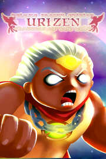

|  | |
| Playtime | Not Played |
| Last Activity | Never |
| Added | 10/22/2020 15:53:39 |
| Modified | Never |
| Completion Status | Not Played |
| Library | Steam |
| Source | Steam |
| Platform | PC (Windows) |
| Release Date | 8/31/2015 |
| Community Score | 29 |
| Critic Score | |
| User Score | |
| Genre | Action Adventure Indie |
| Developer | Red Moon Studio |
| Publisher | Vita Games |
| Feature | Achievements Full Controller Support Single-Player Trading Cards |
| Links | Community Hub Discussions Guides News Store Page PCGamingWiki Achievements |
| Tag | |
That's right, as of May 28, 2018 Urizen has completely changed and most of the negative fanfare was given to the game earlier on, most of the reason why Urizen went Deluxe was because the original version, that and the free Orlygift version wasn't working in terms of GFX, bugs, UI, lack of keyboard and other stuff. It was my bad call that the game was not put on early access so I made a huge upgraded turn around and now the game is up to par. If the game is "laggy" it is because of not using the recommended 4 gigs of RAM. It is an awfully huge game, and if you do get to play it you will see why I spent over 5 years of spare time making it. This is my, the developers feedback and stay tuned for a fun DLC game for Urizen coming your way, next year...
THE DELUXE FROSTY EDITION IS HERE!!! Deluxe Frosty Update Includes - 69+ massive stages - 30+ Steam Achievements - revamped bosses - new Readily Playable and Hidden Warriors- - an interactive training stage - 3 different difficultry modes - expanded save menu - fullscreen/window option - the ability to manually enable gamepad or keyboard - the Urizen "Bazzar" store enabling the purchase of new warriors, powerups, and elixirs - the "Witches Hut" enabling the selling and trading of items for cash or items like potions. - a "block" button will be implemented - the removal of floating coins - coin bags and treasure chests among will replace those floating coins - stage design will be updated - the ability to speak to natives and towns people will be made providing with unique hints, and secrets - 12 totally new stages - new bosses - new complete ending - more hidden secrets and or easter eggs - expanded cutscenes - new easy to use "Frosty" themed menu layouts - enemies killed will leave behind items that can be collected, traded or sold, at the "Witches Hut". - Revamped SFX selection - Soundtrack DLC - thorough bug and glitch removal has been made - revamped more sophisticated enemies and updated warriors
A free copy was given earlier to those reviewers at ORLYGIFT, this FREE version featured no keyboard compatibility, this is NO LONGER TRUE. Urizen Shadows of the Cold is readily Keyboard and Gamepad enabled.
40+ Steam Achievements available!!!